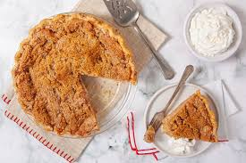

Home Page
Apple Pie

Description
There's nothing more American than enjoying a barbeque, watching fireworks,
and eating a slice of homemade apple pie.
Ingredients
- Pie crust
- 1 cup dry rolled oats
- 1/4 cup whole-wheat pastry flour
- 1/4 cup ground almonds
- 2 tablespoons brown sugar, packed
- 3 tablespoons canola oil
- 1 tablespoon water
Filling
- 6 cups sliced and peeled tart apples (about 4 large apples)
- 1/3 cup frozen apple juice concetrate
- 2 tablespoons quick-cooking tapioca
- 1 teaspoon cinnamon
Steps
-
To prepare pie crust, mix dry ingredients together in a large
mixing bowl.
-
In a seperate bowl, mix oil and water together with whisk. Add
oil and water mixture to dry ingredients. Mix until dough holds
together. Add a bit more water if needed.
-
Press dough into a 9-inch pie plate. Set aside until filling is
prepared.
-
To prepare filling, combine all ingredients in a large bowl.
-
Let stand for 15 minutes. Stir and then spoon into prepared
pie crust.
-
Bake at 425 Fahreinheit for 15 minutes. Reduce heat to 350
Fahreinheit and bake 40 minutes, or until apples are tender.